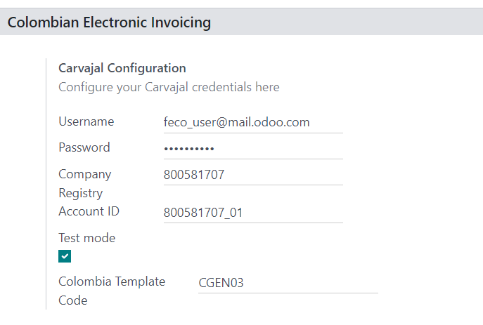
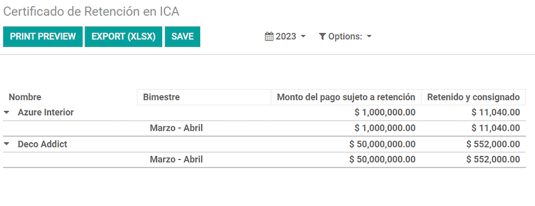

ประเทศโคลัมเบีย¶
แพ็คเกจการประยุกต์ใช้ของประเทศโคลอมเบียของ Odoo นำเสนอฟีเจอร์ด้านบัญชี การเงิน และกฎหมายสำหรับฐานข้อมูลในประเทศโคลอมเบีย เช่น ผังบัญชี ภาษี และการออกใบแจ้งหนี้อิเล็กทรอนิกส์
นอกจากนี้ยังมีชุดวิดีโอเกี่ยวกับเรื่องนี้ด้วย วิดีโอเหล่านี้ครอบคลุมถึงวิธีการเริ่มต้นใหม่ทั้งหมด ตั้งค่าคอนฟิก ขั้นตอนการทำงานทั่วไปให้เสร็จสิ้น และให้ข้อมูลเชิงลึกเกี่ยวกับกรณีการใช้งานเฉพาะบางกรณีเช่นกัน
การกำหนดค่า¶
การติดตั้งโมดูล¶
ติดตั้ง โมดูลต่อไปนี้เพื่อรับฟีเจอร์ทั้งหมดของการประยุกต์ใช้สำหรับประเทศโคลอมเบีย:
ชื่อ |
ชื่อทางเทคนิค |
คำอธิบาย |
|---|---|---|
ประเทศโคลัมเบีย - ระบบบัญชี |
|
ค่าเริ่มต้น แพ็คเกจการประยุกต์ใช้ทางการเงิน โมดูลนี้เพิ่มฟีเจอร์ระบบบัญชีพื้นฐานสำหรับการประยุกต์ใช้สำหรับประเทศโคลอมเบีย: ผังบัญชี ภาษี การหัก ณ ที่จ่าย และชนิดเอกสารประจำตัว |
ประเทศโคลอมเบีย - รายงานด้านบัญชี |
|
รวมรายงานทางบัญชีสำหรับการส่งใบรับรองไปยังซัพพลายเออร์สำหรับการหักภาษี ณ ที่จ่าย |
การออกใบแจ้งหนี้อิเล็กทรอนิกส์สำหรับประเทศโคลอมเบียกับ Carvajal |
|
โมดูลนี้มีฟีเจอร์ที่จำเป็นสำหรับการรวมเข้ากับ Carvajal และสร้างใบแจ้งหนี้อิเล็กทรอนิกส์และเอกสารสนับสนุนที่เกี่ยวข้องกับใบเรียกเก็บเงินของผู้ขาย โดยอิงตาม DIAN กฎระเบียบ |
ประเทศโคลอมเบีย - ระบบขายหน้าร้าน |
|
รวมใบเสร็จรับเงินระบบขายหน้าร้านสำหรับการประยุกต์ใช้สำหรับประเทศโคลอมเบีย |
Note
เมื่อเลือก ประเทศโคลัมเบีย สำหรับ การประยุกต์ใช้ทางการเงิน ของบริษัท Odoo จะติดตั้งโมดูลบางอย่างโดยอัตโนมัติ
การกำหนดค่าของบริษัท¶
หากต้องการกำหนดค่าข้อมูลบริษัทของคุณ ให้ไปที่ :menuselection:แอป "รายชื่อผู้ติดต่อ" และค้นหาบริษัทของคุณ
หรือเปิดใช้งาน โหมดนักพัฒนา และไปที่ จากนั้น แก้ไขแบบฟอร์มการติดต่อและกำหนดค่าข้อมูลต่อไปนี้:
ชื่อบริษัท
ที่อยู่: รวมถึง เมือง แผนก และ รหัสไปรษณีย์
หมายเลขประจำตัว: เลือก ประเภทการระบุตัวตน (
NIT,Cédula de Ciudadanía,Registro Civil, อื่นๆ) เมื่อ ประเภทการระบุตัวตน เป็นNIT, หมายเลขประจำตัว ต้อง มี หลักการยืนยัน ที่ส่วนท้ายของ ID นำหน้าด้วยเครื่องหมายขีดกลาง (-)
ถัดไป กำหนดค่า ข้อมูลทางการเงิน ในแท็บ การขายและการซื้อ:
Obligaciones y Responsabilidades: Select the fiscal responsibility for the company (
O-13Gran Contribuyente,O-15Autorretenedor,O-23Agente de retención IVA,O-47Regimen de tributación simple,R-99-PNNo Aplica).Gran Contribuyente: หากบริษัทคือ Gran Contribuyente ควรเลือกตัวเลือกนี้
Fiscal Regimen: เลือกชื่อบรรณาการสำหรับบริษัท (
IVA,INC,IVA e INCหรือNo Aplica)ชื่อทางการค้า: หากบริษัทใช้ชื่อทางการค้าเฉพาะเจาะจง และจำเป็นต้องแสดงในใบแจ้งหนี้
การกำหนดค่าข้อมูลรับรอง Carjaval¶
เมื่อติดตั้งโมดูลแล้ว ข้อมูลรับรองผู้ใช้ ต้อง ได้รับการกำหนดค่า เพื่อเชื่อมต่อกับ Carvajal Web Service โดยไปที่ และเลื่อนไปที่ส่วน การออกใบแจ้งหนี้อิเล็กทรอนิกส์ของโคลอมเบีย จากนั้น กรอกข้อมูลการกำหนดค่าที่จำเป็นที่ได้รับจาก Carvajal:
ชื่อผู้ใช้ และ รหัสผ่าน: ชื่อผู้ใช้และรหัสผ่าน (จัดทำโดย Carvajal) ให้กับบริษัท
ทะเบียนบริษัท: หมายเลข NIT ของบริษัท ไม่มี รหัสยืนยัน
รหัสบัญชี: หมายเลข NIT ของบริษัทตามด้วย
_01รหัสเทมเพลตสำหรับประเทศโคลอมเบีย: เลือกหนึ่งในสองเทมเพลตที่มีอยู่ (
CGEN03หรือCGNE04) เพื่อใช้ในรูปแบบ PDF ของใบแจ้งหนี้อิเล็กทรอนิกส์
เปิดใช้งานช่องทำเครื่องหมาย โหมดทดสอบ เพื่อเชื่อมต่อกับสภาพแวดล้อมการทดสอบ Carvajal
เมื่อ Odoo และ Carvajal ได้รับการกำหนดค่าอย่างสมบูรณ์และพร้อมสำหรับการใช้งานจริงแล้ว ให้ปิดใช้งานช่องทำเครื่องหมาย โหมดทดสอบ เพื่อใช้ฐานข้อมูลการใช้งานจริง
Important
โหมดทดสอบ ต้องใช้กับฐานข้อมูลที่ซ้ำกัน**เท่านั้น**, ไม่ใช่ สภาพแวดล้อมการใช้งานจริง
รายงานการกำหนดค่าข้อมูล¶
ข้อมูลรายงานสามารถกำหนดได้สำหรับส่วนทางการเงินและข้อมูลธนาคารของ PDF โดยเป็นส่วนหนึ่งของข้อมูลที่จัดโครงแบบที่ส่งในรูปแบบ XML
ไปที่ และเลื่อนไปที่ส่วน การออกใบแจ้งหนี้อิเล็กทรอนิกส์ของประเทศโคลอมเบีย เพื่อค้นหาช่อง การกำหนดค่ารายงาน คุณสามารถกำหนดค่าข้อมูลส่วนหัวสำหรับรายงานแต่ละประเภทได้ที่นี่
Gran Contribuyente
Tipo de Régimen
Retenedores de IVA
Autorretenedores
Resolución Aplicable
Actividad Económica
ข้อมูลธนาคาร
การกำหนดค่าข้อมูลหลัก¶
พาร์ทเนอร์¶
สามารถสร้างผู้ติดต่อของคู่ค้าได้ในแอป รายชื่อผู้ติดต่อ โดยไปที่ และคลิกปุ่ม สร้าง
จากนั้น ตั้งชื่อผู้ติดต่อ และใช้ปุ่มตัวเลือก ให้เลือกประเภทผู้ติดต่อ รายบุคคล หรือ บริษัท
กรอก ที่อยู่ ให้ครบถ้วน รวมถึงโค้ด เมือง, รัฐ และ รหัสไปรษณีย์ จากนั้น กรอกข้อมูลประจำตัวและข้อมูลทางการเงินให้ครบถ้วน
ข้อมูลประจำตัว¶
ประเภทการระบุตัวตนที่กำหนดโดย DIAN มีอยู่ในแบบฟอร์มคู่ค้า ซึ่งเป็นส่วนหนึ่งของการประยุกต์ใช้สำหรับประเทศโคลอมเบีย พันธมิตรชาวโคลอมเบีย ต้อง มีชุด หมายเลขประจำตัว (VAT) และ ประเภทเอกสาร
ข้อมูลทางการเงิน¶
รหัสความรับผิดชอบของคู่ค้า (ส่วนที่ 53 ในเอกสาร RUT) จะรวมไว้เป็นส่วนหนึ่งของโมดูลการออกใบแจ้งหนี้อิเล็กทรอนิกส์ ตามที่ DIAN กำหนด
ช่องที่ต้องกรอกอยู่ใน :
หน้าที่และความรับผิดชอบ: เลือกความรับผิดชอบทางการเงินสำหรับบริษัท (
O-13Gran Contribuyente,O-15Autorretenedor,O-23Agente de retención IVA,O-47Regimen de tributación แบบง่าย หรือR-99-PNไม่ใช่ Aplica)Gran Contribuyente: หากบริษัทคือ Gran Contribuyente ควรเลือกตัวเลือกนี้
ระบบการเงิน: เลือกชื่อบรรณาการสำหรับบริษัท (
IVA,INC,IVA e INCหรือNo Aplica)ชื่อทางการค้า: หากบริษัทใช้ชื่อทางการค้าเฉพาะเจาะจง และจำเป็นต้องแสดงในใบแจ้งหนี้
สินค้า¶
หากต้องการจัดการผลิตภัณฑ์ ให้ไปที่ จากนั้นคลิกที่ผลิตภัณฑ์
เมื่อเพิ่มข้อมูลทั่วไปในแบบฟอร์มผลิตภัณฑ์ จำเป็นต้องมี หมวดหมู่ UNSPSC (แท็บระบบบัญชี) หรือ รหัสอ้างอิงภายใน (แท็บข้อมูลทั่วไป) ฟิลด์ได้รับการกำหนดค่าแล้ว อย่าลืม บันทึก ผลิตภัณฑ์เมื่อกำหนดค่าแล้ว
ภาษี¶
หากต้องการสร้างหรือแก้ไขภาษี ให้ไปที่ และเลือกภาษีที่เกี่ยวข้อง
หากธุรกรรมการขายรวมผลิตภัณฑ์ที่มีภาษี จะต้องกำหนดค่าฟิลด์ ประเภทค่า ในแท็บ ตัวเลือกขั้นสูง ตามภาษี รวมประเภทภาษีเงินประกัน (ICA, IVA, Fuente) ไว้ด้วย การกำหนดค่านี้ใช้เพื่อแสดงภาษีอย่างถูกต้องในใบแจ้งหนี้ PDF

สมุดรายวันการขาย¶
เมื่อ DIAN ได้กำหนดลำดับและคำนำหน้าอย่างเป็นทางการสำหรับการแก้ไขใบแจ้งหนี้อิเล็กทรอนิกส์ สมุดรายวันการขายที่เกี่ยวข้องกับเอกสารใบแจ้งหนี้ ต้อง ได้รับการอัปเดตใน Odoo โดยไปที่ และเลือกสมุดรายวันการขายที่มีอยู่ หรือสร้างใหม่ด้วยปุ่ม สร้าง
ในแบบฟอร์มบันทึกการขาย ให้ป้อน ชื่อสมุดรายวัน, ประเภท และตั้งค่า รหัสย่อ ที่ไม่ซ้ำกันในแท็บ รายการสมุดรายวัน จากนั้น กำหนดค่าข้อมูลต่อไปนี้ในแท็บ การตั้งค่าขั้นสูง:
การออกใบแจ้งหนี้อิเล็กทรอนิกส์: เปิดใช้งาน UBL 2.1 (ประเทศโคลอมเบีย)
การแก้ปัญหาการออกใบแจ้งหนี้: หมายเลขมติที่ออกโดย DIAN ไปยังบริษัท
วันที่แก้ไข: วันที่เริ่มมีผลใช้บังคับของมติ
วันที่สิ้นสุดการแก้ไข: วันที่สิ้นสุดความถูกต้องของมติ
ช่วงของการกำหนดหมายเลข (ขั้นต่ำ): หมายเลขใบแจ้งหนี้ที่ได้รับอนุญาตครั้งแรก
ช่วงของการกำหนดหมายเลข (สูงสุด): หมายเลขใบแจ้งหนี้ที่ได้รับอนุญาตล่าสุด
Note
ลำดับและความละเอียดของบันทึกประจำวัน ต้อง ตรงกับลำดับที่กำหนดค่าไว้ใน Carvajal และ DIAN
ลำดับใบแจ้งหนี้¶
ลำดับใบแจ้งหนี้และคำนำหน้า ต้อง ได้รับการกำหนดค่าอย่างถูกต้องเมื่อสร้างเอกสารแรก
Note
Odoo จะกำหนดคำนำหน้าและลำดับให้กับใบแจ้งหนี้ต่อไปนี้โดยอัตโนมัติ
สมุดรายวันการซื้อ¶
เมื่อ DIAN ได้กำหนดลำดับและคำนำหน้าอย่างเป็นทางการสำหรับ เอกสารสนับสนุน ที่เกี่ยวข้องกับใบเรียกเก็บเงินของผู้ขาย สมุดรายวันการซื้อที่เกี่ยวข้องกับเอกสารสนับสนุนจำเป็นต้องได้รับการอัปเดตใน Odoo กระบวนการนี้คล้ายกับการกำหนดค่าของ สมุดรายวันการขาย
ผังบัญชี¶
ผังบัญชี ได้รับการติดตั้งตามค่าเริ่มต้นโดยเป็นส่วนหนึ่งของโมดูลการแปล บัญชีจะถูกแมปโดยอัตโนมัติในด้านภาษี เจ้าหนี้เริ่มต้น และลูกหนี้เริ่มต้น ผังบัญชีสำหรับประเทศโคลอมเบียจะขึ้นอยู่กับ PUC (Plan Unico de Cuentas)
ขั้นตอนการทำงานหลัก¶
ใบแจ้งหนี้อิเล็กทรอนิกส์¶
ต่อไปนี้คือรายละเอียดขั้นตอนการทำงานหลักสำหรับใบแจ้งหนี้อิเล็กทรอนิกส์ที่มีการประยุกต์ใช้สำหรับประเทศโคลอมเบีย:
ผู้ส่งสร้างใบแจ้งหนี้
ผู้ให้บริการใบแจ้งหนี้อิเล็กทรอนิกส์สร้างไฟล์ XML ทางกฎหมาย
ผู้ให้บริการใบแจ้งหนี้อิเล็กทรอนิกส์สร้าง CUFE (รหัสอิเล็กทรอนิกส์ใบแจ้งหนี้) ด้วยลายเซ็นอิเล็กทรอนิกส์
ผู้ให้บริการใบแจ้งหนี้อิเล็กทรอนิกส์ส่งการแจ้งเตือนไปที่ DIAN
DIAN ตรวจสอบใบแจ้งหนี้
DIAN ยอมรับหรือปฏิเสธใบแจ้งหนี้
ผู้ให้บริการใบแจ้งหนี้อิเล็กทรอนิกส์สร้างใบแจ้งหนี้ PDF ด้วยรหัส QR โค้ด
ผู้ให้บริการใบแจ้งหนี้อิเล็กทรอนิกส์จะส่งใบแจ้งหนี้ไปยังผู้ซื้อ
ผู้รับบัตรจะส่งใบตอบรับ และยอมรับหรือปฏิเสธใบแจ้งหนี้
ผู้ส่งดาวน์โหลดไฟล์
.zipด้วย PDF และ XML

การสร้างใบแจ้งหนี้¶
Note
ลำดับงานการทำงานที่เกิดขึ้นก่อนการตรวจสอบใบแจ้งหนี้จะ ไม่ เปลี่ยนแปลงการเปลี่ยนแปลงหลักที่นำมาใช้กับใบแจ้งหนี้อิเล็กทรอนิกส์
ใบแจ้งหนี้อิเล็กทรอนิกส์จะถูกสร้างขึ้นและส่งไปยังทั้ง DIAN และลูกค้าผ่านการรวมกับบริการเว็บของ Carvajal สามารถสร้างเอกสารเหล่านี้ได้จากใบสั่งขายของคุณหรือสร้างขึ้นด้วยตนเอง หากต้องการสร้างใบแจ้งหนี้ใหม่ ให้ไปที่ และเลือก สร้าง ในแบบฟอร์มใบแจ้งหนี้ให้กำหนดค่าฟิลด์ต่อไปนี้:
ลูกค้า: ข้อมูลของลูกค้า
สมุดรายวัน: สมุดรายวันที่ใช้สำหรับใบแจ้งหนี้อิเล็กทรอนิกส์
ประเภทใบแจ้งหนี้อิเล็กทรอนิกส์: เลือกประเภทเอกสาร ตามค่าเริ่มต้น Factura de Venta จะถูกเลือกไว้
รายการใบแจ้งหนี้: ระบุสินค้าที่มีภาษีที่ถูกต้อง
เมื่อเสร็จแล้ว คลิก ยืนยัน
การตรวจสอบใบแจ้งหนี้¶
หลังจากการยืนยันใบแจ้งหนี้ ไฟล์ XML จะถูกสร้างขึ้นและส่งไปยัง Carvajal โดยอัตโนมัติ จากนั้นใบแจ้งหนี้จะถูกประมวลผลแบบอะซิงโครนัสโดยบริการใบแจ้งหนี้อิเล็กทรอนิกส์ UBL 2.1 (ประเทศโคลอมเบีย) ไฟล์นี้ยังแสดงอยู่ในแชทด้วย

ขณะนี้ ฟิลด์ ชื่อใบแจ้งหนี้อิเล็กทรอนิกส์ จะแสดงอยู่ในแท็บ เอกสาร EDI พร้อมด้วยชื่อของไฟล์ XML นอกจากนี้ ฟิลด์ สถานะใบแจ้งหนี้อิเล็กทรอนิกส์ จะแสดงพร้อมกับค่าเริ่มต้น ส่ง หากต้องการประมวลผลใบแจ้งหนี้ด้วยตนเอง ให้คลิกที่ปุ่ม ประมวลผลทันที
การรับ XML และ PDF ทางกฎหมาย¶
ผู้จำหน่ายใบแจ้งหนี้อิเล็กทรอนิกส์ (Carvajal) ได้รับไฟล์ XML และดำเนินการตรวจสอบโครงสร้างและข้อมูล
หลังจากตรวจสอบใบแจ้งหนี้อิเล็กทรอนิกส์แล้ว ให้ดำเนินการสร้าง XML ทางกฎหมายซึ่งรวมถึงลายเซ็นดิจิทัลและรหัสเฉพาะ (CUFE) ใบแจ้งหนี้ PDF ที่มีรหัส QR โค้ดและ CUFE ก็ถูกสร้างขึ้นเช่นกัน หากทุกอย่างถูกต้อง ค่าในช่อง ใบแจ้งหนี้อิเล็กทรอนิกส์ จะเปลี่ยนเป็น ส่งแล้ว
A .zip ที่มีใบแจ้งหนี้อิเล็กทรอนิกส์ทางกฎหมาย (ในรูปแบบ XML) และใบแจ้งหนี้ (รูปแบบ PDF) จะถูกดาวน์โหลดและแสดงในช่องแชทเรื่องใบแจ้งหนี้:

สถานะใบแจ้งหนี้อิเล็กทรอนิกส์เปลี่ยนเป็น ได้รับการยอมรับ
ใบลดหนี้¶
กระบวนการสำหรับใบลดหนี้จะเหมือนกับใบแจ้งหนี้ หากต้องการสร้างใบลดหนี้โดยอ้างอิงกับใบแจ้งหนี้ ให้ไปที่ ในใบแจ้งหนี้ คลิก เพิ่มใบลดหนี้ และกรอกข้อมูลต่อไปนี้:
วิธีการให้เครดิต: เลือกประเภทวิธีการให้เครดิต
คืนเงินบางส่วน: ใช้ตัวเลือกนี้เมื่อเป็นจำนวนเงินบางส่วน
คืนเงินเต็มจำนวน: ใช้ตัวเลือกนี้หากใบลดหนี้เป็นเงินเต็มจำนวน
คืนเงินเต็มจำนวนและใบแจ้งหนี้ฉบับร่างใหม่: ใช้ตัวเลือกนี้หากใบลดหนี้ได้รับการตรวจสอบอัตโนมัติและกระทบยอดกับใบแจ้งหนี้ ใบแจ้งหนี้เดิมซ้ำกันเป็นฉบับร่างใหม่
เหตุผล: ป้อนเหตุผลของใบลดหนี้
วันที่กลับรายการ: เลือกว่าคุณต้องการวันที่เจาะจงสำหรับใบลดหนี้หรือเป็นวันที่เข้าสมุดรายวัน
ใช้สมุดรายวันเฉพาะ: เลือกสมุดรายวันสำหรับใบลดหนี้ของคุณ หรือปล่อยว่างไว้หากคุณต้องการใช้สมุดรายวันเดียวกันกับใบแจ้งหนี้เดิม
วันที่คืนเงิน: หากคุณเลือกวันที่เจาะจง ให้เลือกวันที่สำหรับการคืนเงิน
เมื่อตรวจสอบแล้ว ให้คลิกปุ่ม ย้อนกลับ
ใบเพิ่มหนี้¶
กระบวนการสำหรับใบเพิ่มหนี้จะคล้ายกับใบลดหนี้ หากต้องการสร้างใบเพิ่มหนี้โดยอ้างอิงกับใบแจ้งหนี้ ให้ไปที่ ในใบแจ้งหนี้ คลิกปุ่ม เพิ่มใบเพิ่มหนี้ และป้อนข้อมูลต่อไปนี้:
เหตุผล: พิมพ์เหตุผลของใบเพิ่มหนี้
วันที่ใบลดหนี้: เลือกตัวเลือกเฉพาะ
คัดลอกรายการ: เลือกตัวเลือกนี้หากคุณต้องการลงทะเบียนใบเพิ่มหนี้ด้วยรายการใบแจ้งหนี้เดียวกัน
ใช้สมุดรายวันเฉพาะ: เลือกจุดเครื่องพิมพ์สำหรับใบเพิ่มหนี้ของคุณ หรือปล่อยว่างไว้หากคุณต้องการใช้สมุดรายวันเดียวกันกับใบแจ้งหนี้ต้นฉบับ
เมื่อเสร็จแล้ว คลิก สร้างใบเพิ่มหนี้
เอกสารประกอบการออกบิลผู้ขาย¶
ด้วยข้อมูลหลัก ข้อมูลประจำตัว และสมุดรายวันการซื้อที่กำหนดค่าสำหรับเอกสารสนับสนุนที่เกี่ยวข้องกับใบเรียกเก็บเงินของผู้จัดจำหน่าย คุณสามารถเริ่มใช้ เอกสารสนับสนุน ได้
สามารถสร้างเอกสารสนับสนุนสำหรับใบเรียกเก็บเงินของผู้ขายได้จากใบสั่งซื้อของคุณหรือด้วยตนเอง ไปที่ และกรอกข้อมูลต่อไปนี้:
ผู้ขาย: ป้อนข้อมูลของผู้ขาย
วันที่เรียกเก็บเงิน: เลือกวันที่ที่จะเรียกเก็บเงิน
สมุดรายวัน: เลือกสมุดรายวันสำหรับเอกสารสนับสนุนที่เกี่ยวข้องกับใบเรียกเก็บเงินของผู้ขาย
รายการออกใบแจ้งหนี้: ระบุผลิตภัณฑ์ที่มีภาษีที่ถูกต้อง
เมื่อตรวจสอบแล้ว ให้คลิกปุ่ม ยืนยัน เมื่อยืนยันแล้ว ไฟล์ XML จะถูกสร้างขึ้นและส่งไปยัง Carvajal โดยอัตโนมัติ
ข้อผิดพลาดทั่วไป¶
ในระหว่างการตรวจสอบ XML ข้อผิดพลาดทั่วไปส่วนใหญ่เกี่ยวข้องกับข้อมูลหลักที่ขาดหายไป (หมายเลขประจำตัวผู้เสียภาษีติดต่อ, ที่อยู่, ผลิตภัณฑ์, ภาษี) ในกรณีเช่นนี้ ข้อความแสดงข้อผิดพลาดจะแสดงในกล่องแชทหลังจากอัปเดตสถานะใบแจ้งหนี้อิเล็กทรอนิกส์
หลังจากที่ข้อมูลหลักได้รับการแก้ไขแล้ว คุณสามารถประมวลผล XML ใหม่ด้วยข้อมูลใหม่และส่งเวอร์ชันที่อัปเดตได้โดยใช้ปุ่ม ลองอีกครั้ง

รายงานทางการเงิน¶
Certificado de Retención en ICA¶
รายงานนี้เป็นใบรับรองสำหรับผู้จัดจำหน่ายสำหรับการหัก ณ ที่จ่ายสำหรับภาษีอุตสาหกรรมและการพาณิชย์ของโคลอมเบีย (ICA) รายงานนี้อยู่ภายใต้
Certificado de Retención en IVA¶
รายงานนี้จะออกใบรับรองเกี่ยวกับจำนวนเงินที่หักไว้จากผู้ขายสำหรับการหักภาษี ณ ที่จ่าย รายงานนี้อยู่ภายใต้

Certificado de Retención en la Fuente¶
ใบรับรองนี้ออกให้กับคู่ค้าสำหรับภาษีหัก ณ ที่จ่ายที่พวกเขาได้ทำไว้ รายงานนี้อยู่ภายใต้